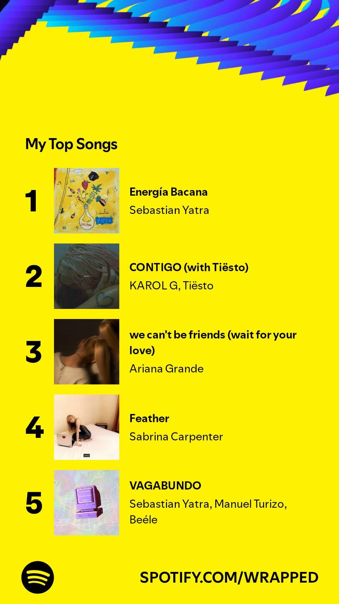
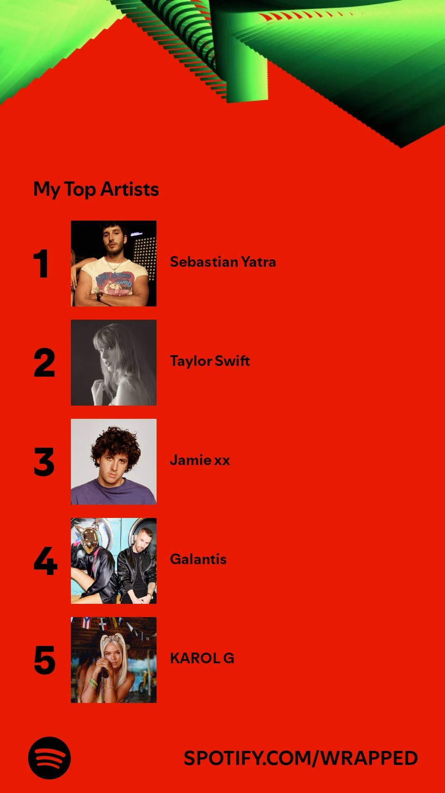

Spotify Wrapped 2024
I analyzed my Spotify data to take a deeper dive into my Spotify Wrapped. I built the following Power BI report using the data provided by Spotify in the Privacy section > Download your data. There are two options, but Account data contains everything needed for the current year. Once I had my data, I imported StreamingHistory_music_1.json into Power BI and started exploring.
Here are the results:
I even knew how my Spotify Wrapped would look before Spotify officially announced it. And as you can see in the following screenshots, my analysis was spot on!
Why settle for just the top 5 artists and songs when you can go even deeper?


Let me know if you want a copy of the pbix file.
Back to home